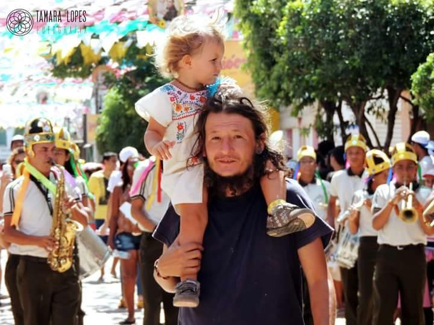

Perfil
Espaço preparado para apresentar a trajetória docente e a relação com o Curso de História da UFRB.
Memorial 20 anos · Perfil docente
Professor(a) do Curso de História da UFRB

Espaço preparado para apresentar a trajetória docente e a relação com o Curso de História da UFRB.
Espaço preparado para áudio ou vídeo do(a) professor(a).
Espaço para disciplinas, projetos, orientações, eventos, pesquisa, extensão e outras atividades.
Espaço para publicações, fotografias, documentos, registros e outros materiais selecionados para o Memorial.
Vozes dos egressos
Memórias de ex-estudantes ajudam a registrar a trajetória docente de Nuno Gonçalves Pereira a partir das experiências de formação construídas no Curso de História da UFRB.
No depoimento, Alessandro reúne memórias de sua trajetória no Curso de História e sua homenagem ao professor Nuno Gonçalves Pereira.
Eduarda compartilha memórias de sua convivência e formação com Nuno Gonçalves Pereira, recordando sua presença na trajetória do curso e na formação de seus estudantes.
Informações do currículo Lattes
Áreas de atuação: História da América · História e Literatura.
Professor de História da América na UFRB. Desenvolve estudos sobre as relações entre história e literatura.
Síntese baseada no currículo Lattes consultado em 2026. As disciplinas específicas só são indicadas quando explicitamente documentadas. Consultar currículo Lattes.